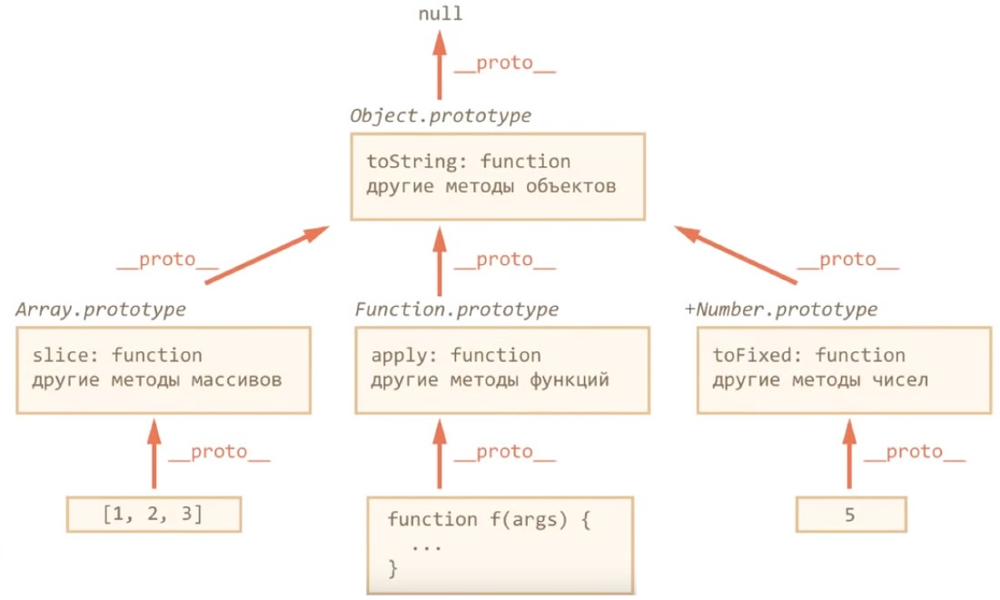

- В простых типах данных хранятся значения (если после присвоения поменяется значение присваиваемой переменной, результат присваивания не изменится)
- В объектах хранятся ссылки
Объекты
Создание объекта
Литеральная нотация
var property = 'lastName';
var person = {
firstName: 'Brad',
[property]: 'Stark',
age: 25,
children: ['Liza', 'Petro'],
address: {
street: '555 Some st',
city: 'Boston',
state: 'MA'
},
getName() {
return this.firstName;
},
get fullName() {
return this.firstName + ' ' + this.lastName;
},
set fullName(value) {
this.firstName = value;
}
}
var a = person.firstName; // обращение к свойству
var a = person['firstName']; // обращение к свойству
var a = person.children[0]; // обращение к свойству
var a = person.address.street; // обращение к свойству
var a = person.getName(); // обращение к методу
person.firstName = 'Tony'; // обновление
person.height = 190; // задание нового свойства
delete person.firstName; // удаление свойства (можно удалить только ненаследованные свойства объекта, наследованные свойства удаляются у прототипа)
var a = 'firstName' in person; // проверка наличия свойсва в объекте (различает отсутствующие свойства и те что были установлен в undefined)
var a = person.firstName; // проверка наличия свойсва в объекте (не различает отсутствующие свойства и те что были установлен в undefined)
person.fullName = 'Steve'; // сеттер
var a = person.fullName; // геттер (result = Steve Stark)
const text = 'Some text';
function getId() {
return 7;
}
let obj = {
text,
['prop_' + getId()]: 'some prop'
}
console.log(obj); // Object {text: 'Some text', prop_7: 'Some prop'}
Перебор объекта
for(var value in person) {
console.log(person[value]);
}
// проверка на личное свойство объекта (не берет наследованные свойства)
for(var value in person) {
if(person.hasOwnProperty(value)) {
console.log(person[value]);
}
}
Методы
var a = Object.keys(person); // возвращает массив из собственных перечисляемых свойств переданного объекта
var a = Object.getOwnPropertyNames(person); // возвращает массив со всеми свойствами (независимо от того, перечисляемые они или нет)
var a = person.hasOwnProperty(prop); // указывает, содержит ли объект свойство (не берет наследованные свойства)
function createCar(property, value) {
return {
[property]: value,
['_' + property]: value,
[property.toUpperCase()]: value,
['get' + property]() {
return this[property];
}
};
}
var a = createCar('vin', 1);
Конструктор создания объекта
var apple = new Object();
apple.color = 'green';
apple.shape = 'round';
apple.describe = function() {
return 'An apple is ' + this.color;
}
var a = apple.color;
var a = apple.describe();
Конструктор создания объекта и задание параметров
function fruit(color, shape) {
this.color = color;
this.shape = shape;
}
var melon = new fruit('yellow', 'round');
var a = melon.color;
Установление свойств объекту через конструктор
var Car = function(x,y) {
this.x = x;
this.y = y;
}
var tesla = new Car(10,20);
tesla; // Object { x: 10, y: 20 }
Метод для разных объектов
var speak = function() {
console.log(this.sound, this.name);
}
var animal = {
sound: 'Mrr',
name: 'Cat',
speak: speak
}
animal.speak(); // Mrr, Cat
Создание прототипа
// объект
var Human = {
type: "Human",
head: 1,
legs: 2
};
// прототип
var Megahuman = Object.create(Human);
Megahuman.type; // Human
Megahuman.head; // 1
Megahuman.head = 2; // 2
Human.head; // 1
Megahuman.hands = 10; // 10
Human.hands; // undefined
Human.face; // undefined
Megahuman.face; // undefined
Human.face = "okay"; // okay
Megahuman.face; // okay
Megahuman.face = "awesome"; // awesome
Human.face; // okay
Human.isPrototypeOf(Megahuman); // является ли объект Human прототипом для объекта Megahuman
Конструктор прототипа
var Person = {
constructor(name, age) {
this.name = name;
this.age = age;
return this;
},
greet() {
console.log('Hi ' + this.name);
}
}
var person = Object.create(Person).constructor("Jack", 25);
var a = person.name;
person.greet();
Изменение конструктора
var WebDeveloper = Object.create(Person);
WebDeveloper.constructor = function(name, age, skills) {
Person.constructor.apply(this, arguments);
this.skills = skills || [];
return this;
}
WebDeveloper.develop = function() {
console.log('In Work');
}
var developer = Object.create(WebDeveloper).constructor('Jack', 25, ['html', 'css', 'js']);
console.log(developer.skills);
developer.develop();
console.log(developer.name);
Дескрипторы свойств
-
Свойства объекта имеют:
- Имя
- Значение (атрибут value)
- Атрибуты (writable, enumerable, configurable)
- value, writable, enumerable, configurable можно получить и изменять с помощью объекта Дескриптора свойства
- writable - доступность для записи
- enumerable - будет ли выводиться при переборе в цикле for...in и т.д.
- configurable - определение возможности изменения атрибутов свойства, а также удаления свойства
var person = {
name: 'Tony',
age: 20
}
// получение дескриптора свойств
var a = Object.getOwnPropertyDescriptor(person, 'name'); // {value: "Tony", writable: true, enumerable: true, configurable: true}
// переопределение дескриптора свойств через defineProperty
// 1-объект, 2-свойство, 3-дескриптор
Object.defineProperty(person, 'name', {
value: 'Jack',
writable: false, // доступность для записи
enumerable: false, // будет ли выводиться при переборе в цикле for...in и т.д.
configurable: false // определение возможности изменения атрибутов свойства, а также удаления свойства
});
// переопределение дескриптора свойств через defineProperties
// 1-объект, 2-объект с парами свойсво:дескриптор
Object.defineProperties(person, {
name: {
value: 'Jack',
writable: false
},
age: {
value: 25,
writable: false
}
});
Расширяемость объектов
Расширяемость объектов - возможность добавления новых свойств
var person = {
name: 'Tony',
age: 20
}
Object.preventExtensions(person); // задает объект нерасширяемым (применяется только к самому объекту)
var a = Object.isExtensible(person); // проверяет применение preventExtensions
Object.seal(person); // аналогичен preventExtensions, дополнительно задает атрибут configurable=false для всех свойств
var a = Object.isSealed(person); // проверяет применение seal
Object.freeze(person); // аналогичен seal, дополнительно делает все свойства доступные только для чтения
var a = Object.isFrozen(person); // проверяет применение freeze
Удаление свойств
// объект
var Human = {
type: "Human",
head: 1,
legs: 2
};
// прототип
var Megahuman = Object.create(Human);
Megahuman.head = 2; // 2
delete Megahuman.head;
Megahuman.head; // 1
Классы
Создание класса
// создание класса
class Task {
constructor(name = '', color = Task.getDefaultColor()) {
this.title = 'Выучить JS';
this.name = name;
this.color = color;
this._done = false;
Task.count += 1;
console.log('Создание задачи');
}
// свойство get связывает свойство объекта с функцией, которая будет вызываться
// при обращении к этому свойству
get done() {
return this._done === true ? 'Выполнена' : 'Не выполнена';
}
set done(value) {
if(value != undefined && typeof value === 'boolean') {
this._done = value;
} else {
console.error('Ошибка! Укажите значение true или false');
}
}
complete() {
this.done = true;
console.log(`Задача ${this.title} выполнена`);
}
// статический метод, позволяющий получить значение цвета по умолчанию,
// если цвет не был передан
static getDefaultColor() {
return 'Orange';
}
}
let task = new Task('Новая задача'); // создание экземпляра класса (объекта)
Task.count = 0; // задание статического свойства
console.log(task instanceof Task); // является ли объект представителем класса
console.log(task.title); // обращение к свойству title
console.log(task.name); // обращение к свойству name
console.log(task.color); // обращение к свойству color, не передавая color
console.log(Task.count); // обращение к статическому свойству count
task.complete(); // обращение к методу complete
console.log(task.done, task._done);
// переопределение стандартных методов
Task.prototype.toString = function() {
return this.name;
}
- Классы - это функции, которые создают объекты
- Объект - это экземпляр, представитель класса, т.е. объект, созданный по шаблону со свойствами и методами, указанными в классе
- Конструктор - метод, который вызывается в момент создания объекта т.е. когда используется ключевое слово new он создает свойства и инициализирует, т.е. подготавливает объект к использованию. В классе может быть только 1 конструктор. Если не указать конструктор, то JS создаст пустой конструктор. Свойства указываются только в конструкторе
- Статические свойства и методы принадлежат самому классу, а не объектам, созданным на его основе
- Статические свойства - используются для хранения вспомогательной информации
- Статические методы - используются для создания вспомогательных функций. task.getDefaultColor(); нельзя вызывать напрямую
- Геттеры и Сеттеры - аксессоры. Внутри класса выглядят и ведут себя как методы, а снаружи выглядят и ведут себя как свойства. Эти свойства-методы позволяют получить доступ и присвоить значения "настоящим" свойствам объекта, т.е. выступают в роли фильтра. Названия свойств get и set не должны совпадать с названиями основных свойств объекта
Наследование
class Task {
constructor(title, comment) {
this._comment = comment;
this.title = title;
this.done = false;
Task.count += 1;
console.log('create task');
}
get comment() {
return this._comment;
}
set comment(value) {
this._comment = value;
}
static getDefaultComment() {
return 'Задача';
}
complete() {
this.done = true;
console.log(`Задача ${this.title} выполнена`);
}
}
Task.count = 0; // общее кол-во задач
// наследование между двумя классами
// если у подкласса нет конструктора, он будет использовать конструктор родителя
// если подклассу указать конструктор, то он должен вызывать в начале
// конструктор родительского класса super()
// метод super() позволяет наследовать свойства и методы из прототипа
class SubTask extends Task {
constructor(title, comment, parent) {
super(title, comment);
this.parent = parent;
console.log('create subtask');
}
// переопределение родительского метода
complete() {
// this.done = true;
super.complete();
console.log(`Подзадача ${this.title} выполнена`);
}
}
let task = new Task('Изучить JavaScript', 'Comment Task');
let subtask = new SubTask('Изучить ES6', 'Comment SubTask', task);
task.complete();
subtask.complete();
console.log(SubTask.getDefaultComment());
console.log(SubTask.count);
В ES6 нельзя указывать класс до его объявления
Классы не засоряют глобальное пространство имен (объект window)
Выражения классов
Классы являются функциями, поэтому класс можно объявить двумя способами1. Class Declaration
class Task {
constructor() {
//
}
}
var Task = class Task {
constructor() {
console.log('Create a task');
}
}
var SubTask = class extends Task {
constructor() {
super();
console.log('Create a subtask');
}
}
var task = new Task();
var subtask = new SubTask();
ES5
Классы
function User(name, id) {
this.name = name;
this.id = id;
this.avatar = 'Photo';
// функциональный подход
this.deleteAvatar = function() {
this.avatar = null;
}
}
// прототипный подход
User.prototype.deleteAvatar = function() {
this.avatar = null;
}
var user = new User('Jack', 25);
function Admin(name, id) {
this.name = name;
this.id = id;
this.avatar = 'Photo';
}
Admin.prototype = Object.create(User.prototype);
Admin.prototype.changeMyId = function() {
this.id = 1;
}
var admin = new Admin('Admin', 2);